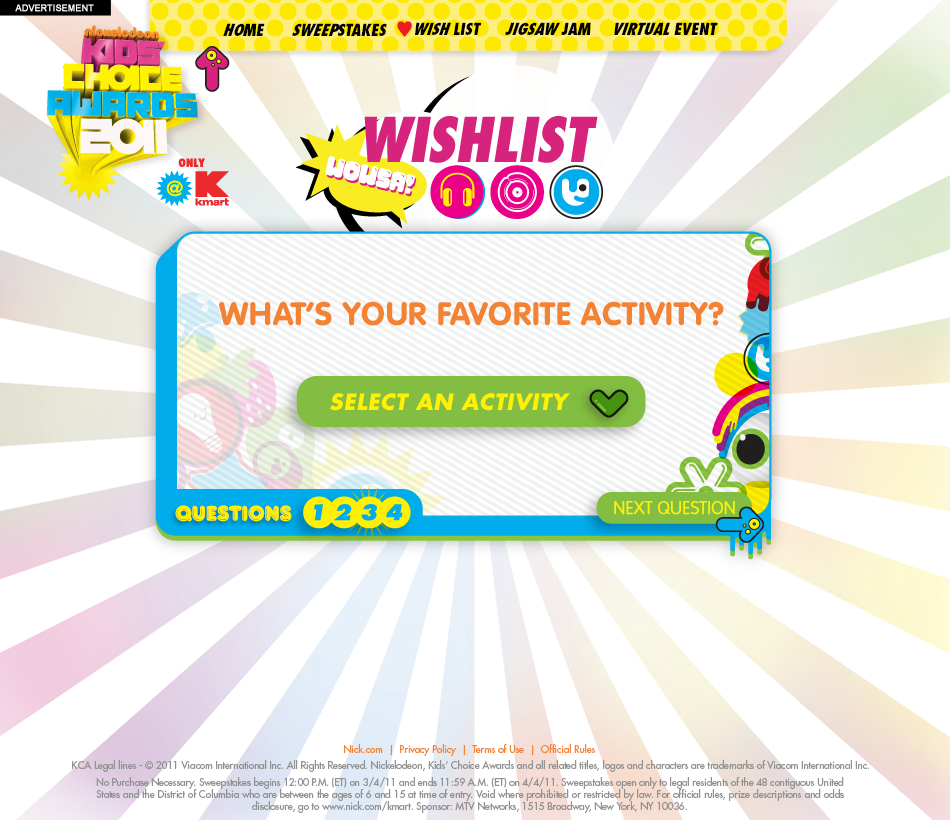
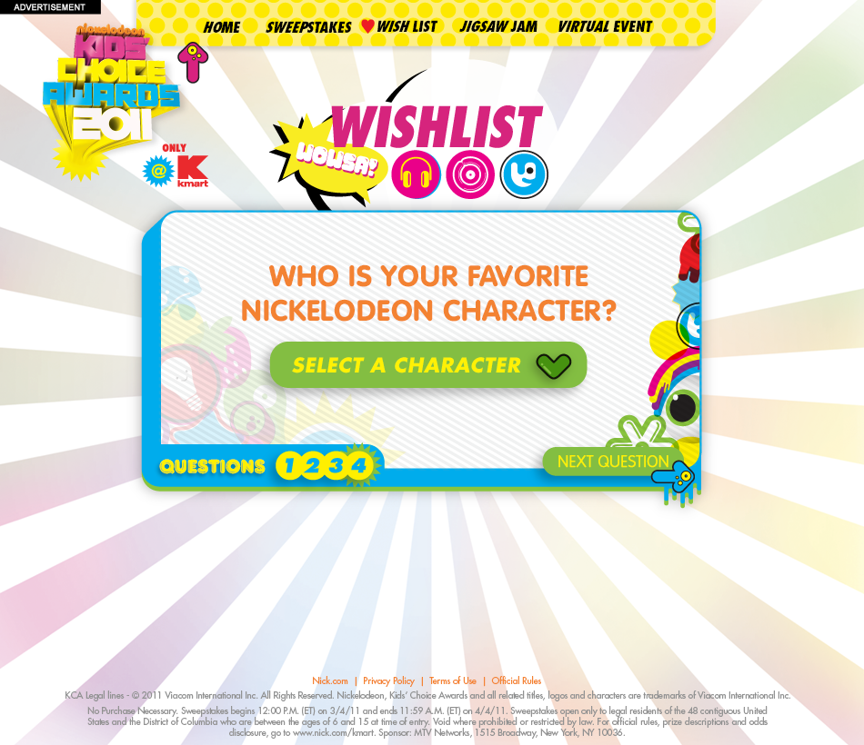
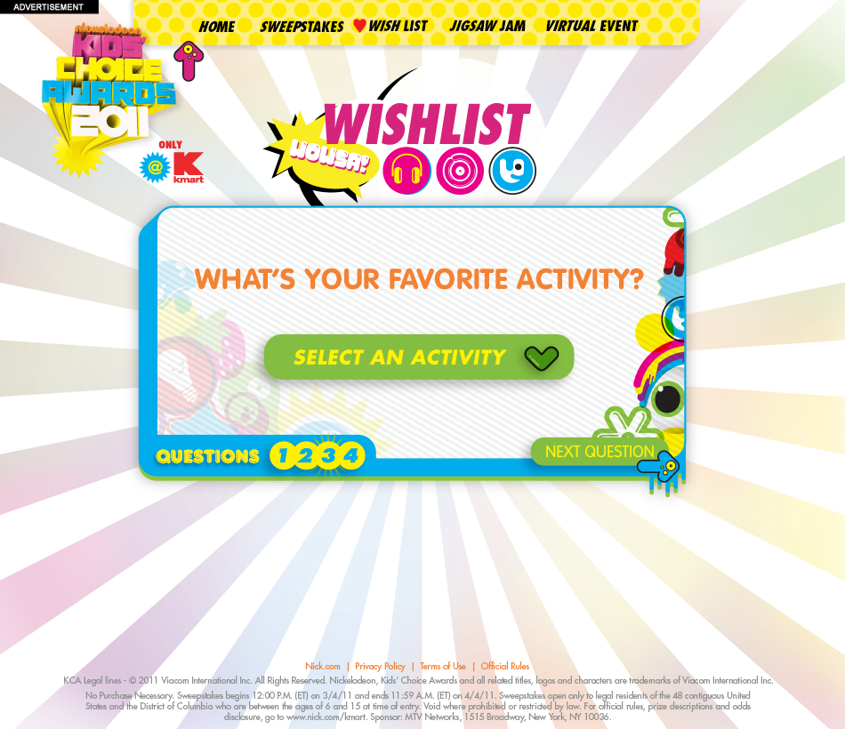
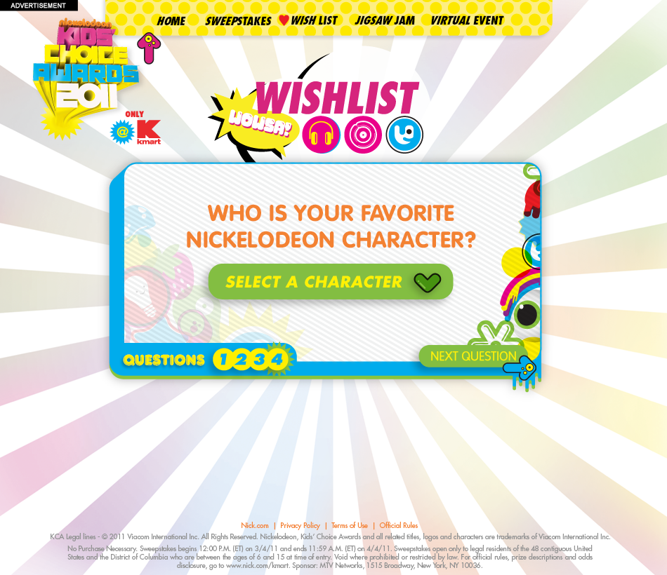
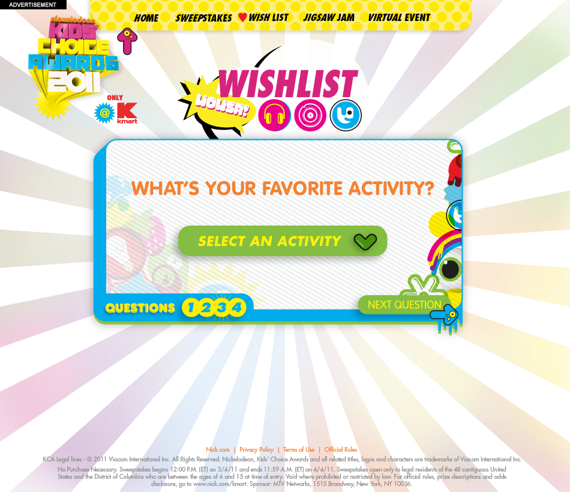
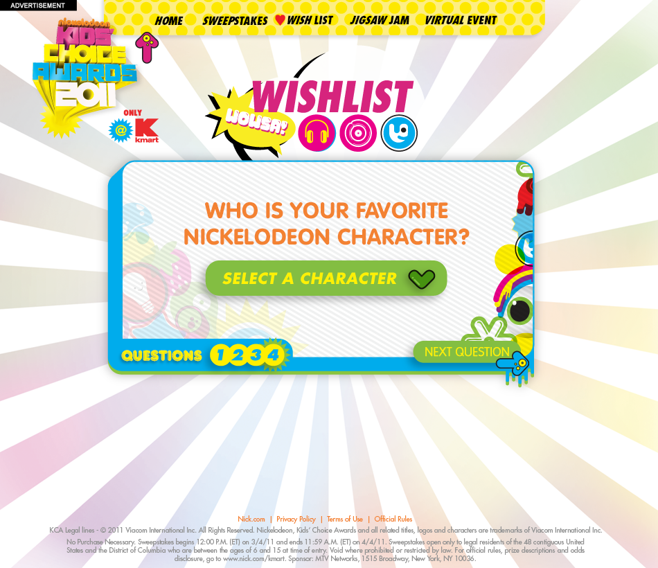

Final Design
 




Kids can use KMART's Wishlist Generator to find cool products based on their interests and the shows they like. This was an advertisement for KMART and the 2011 Nickelodeon Kids' Choice Awards.
The branding for the KCA 2011 was inspired by Japanese commercial advertising and features bright colors with lots of decorative sticker elements. The Wishlist Generator’s slot machine design makes the ad more fun and engaging.
Kids answer a quick quiz about themselves and their interests. The Generator uses these answers to find relevant KMART products. Kids can drag and drop these items into the list at the bottom of the screen and then share their final list with friends and family.

